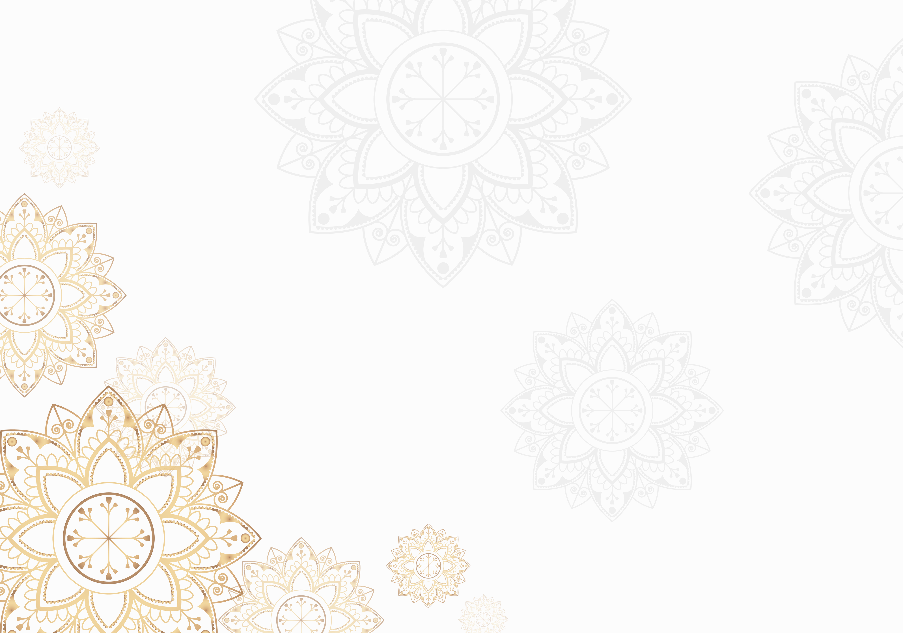

المركز السويدي الدولي للحوار والبحوث ودراسة الحضارات والأديان المقارنة



استراتيجية المركز
1. نشر ثقافة الحوار وقبول الآخر والتعايش السلمى بين أتباع الديانات
2. حوار الحضارات والثقافات
3. إيضاح رسالة وفلسفة الإسلام والسلام والتسامح
الرؤية
- أن يكون المركز نموذجا رائدا فى تحقيق التعايش السلمي بين أتباع الديانات المختلفة ومرجعية عالمية فى مجال إثراء الحوار.
- أن يكون المركز أنموذجاً للريادة على المستوى المحلي والإقليمي والدولي سعيا ﻹسهام رشيد فى العبور نحو مستقبل مشرق.
الرسالة :-
يسعى المركز لحوار بناء بين أتباع الأديان والحضارات والثقافات من أجل فهم أفضل للمبادئ والتعاليم الدينية ولتسخيرها لخدمة الإنسانية جمعاء، انطلاقا من الحوار المتبادل والاعتراف باﻹختلاف، وإثراء النشاط العلمى بالبحث والتأليف وتنفيذ البرامج والفعاليات المتخصصة وتوسيع آفاق التقارب الثقافى، وتعزيز التنافسية مع الباحثين والمؤسسات النظيرة، انطلاقا من مجالات عمل المركز، ملتزمين بالمعايير العلمية واﻷكاديمية، مستثمرين الموارد البشرية والفنية فى إطار شراكة فاعلة لفتح آفاق الحوار والتواصل داخلياً وخارجيا .ً
النظام اﻷساسى
اﻹسم: المركز السويدي الدولى للحواروالبحوث ودراسة الحضارات والأديان المقارنة.
المقر: بلدية سندسفال.
المركز هيئة مستقلة إجتماعية ثقافية إنسانية فكرية تعمل لتحقيق الصالح العام وما يتصل بذلك من أعمال مشروعة
يعتمد المركز فى تحقيق أهدافه على الوسائل المشروعة ومنها:
- أنه منتدى لتعزيز ثقافة التعايش السلمى وقبول الآخر.
- ترسيخ القيم الدينية لمعالجة القضايا والمشكلات التى تهم البشرية.
برامج المركز
أ- المؤتمر السنوي:
- يعقد المركز مؤتمرا سنويا لحوار الأديان والحضارات والثقافات، تناقش فيه بعض القضايا الإنسانية المهمة، ويتم تناولها من منظور كل دين للتوصل إلى نتائج مشتركة تصب فى خدمة قيم العدل والسلام.
- نشر ثقافة الحوار والتعايش السلمى وقبول الآخر.
ب- الندوات:
هى ندوات وورش عمل وطاولة مستديرة متخصصة لمناقشة بعض الموضوعات ذات الإهتمام المشترك بين أتباع الأديان المختلفة والحضارات والثقافات، حيث يدعى إليها مختصون وعلماء دين وباحثون لإثراء هذه الموضوعات ويتم نشر نتائج هذه المناقشات فى كتيبات يصدرها المركز بصورة دورية.
ج- المجلة العلمية:
يصدر المركز مجلة فصلية باللغات السويدية والإنجليزية والعربية وهى ذات طابع علمي ثقافي منهجي، تتضمن العديد من البحوث المحكمة، وتناقش مختلف القضايا الفكرية والإنسانية والحوارية بين اﻷديان والحضارات والثقافات.
ج- المجلة العلمية:
يصدر المركز مجلة فصلية باللغات السويدية والإنجليزية والعربية وهى ذات طابع علمي ثقافي منهجي، تتضمن العديد من البحوث المحكمة، وتناقش مختلف القضايا الفكرية والإنسانية والحوارية بين اﻷديان والحضارات والثقافات.
د- بحوث ودراسات:
يقوم المركز بإعداد البحوث والدراسات فى مجالات متعددة، مثل القواسم المشتركة بين اﻷديان والدراسات الميدانية للقضايا ذات اﻷولوية وتحليل مؤشرات أداء المركز.